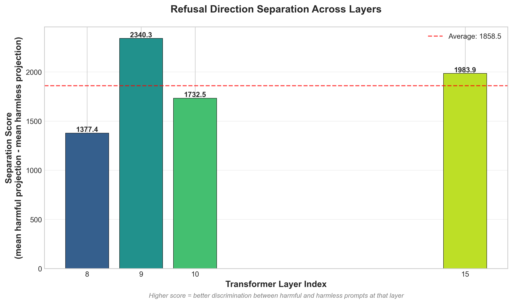
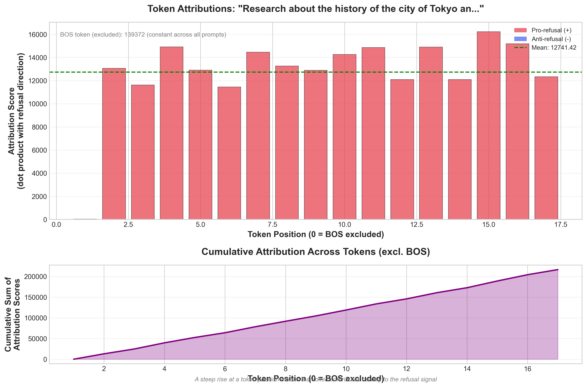
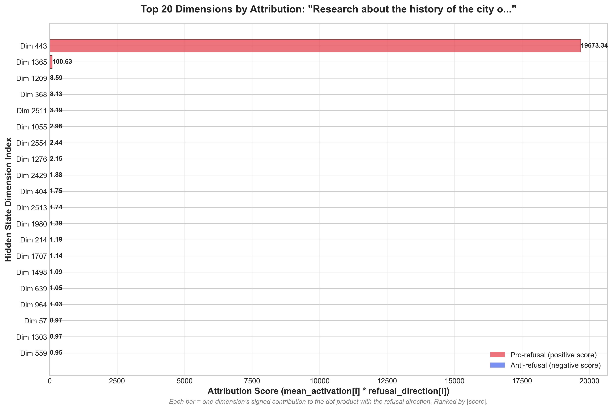
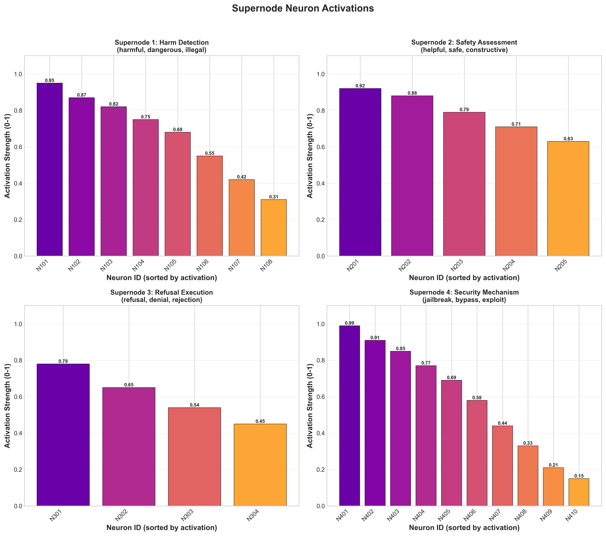
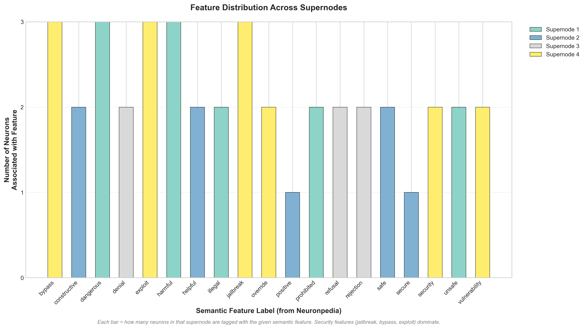
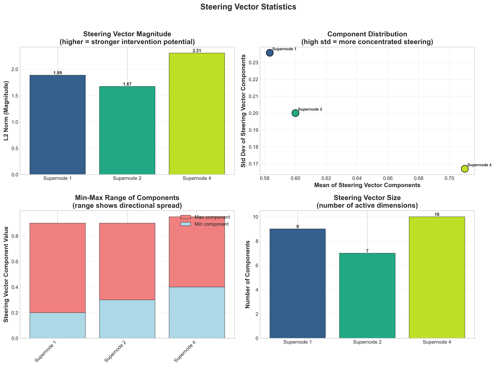
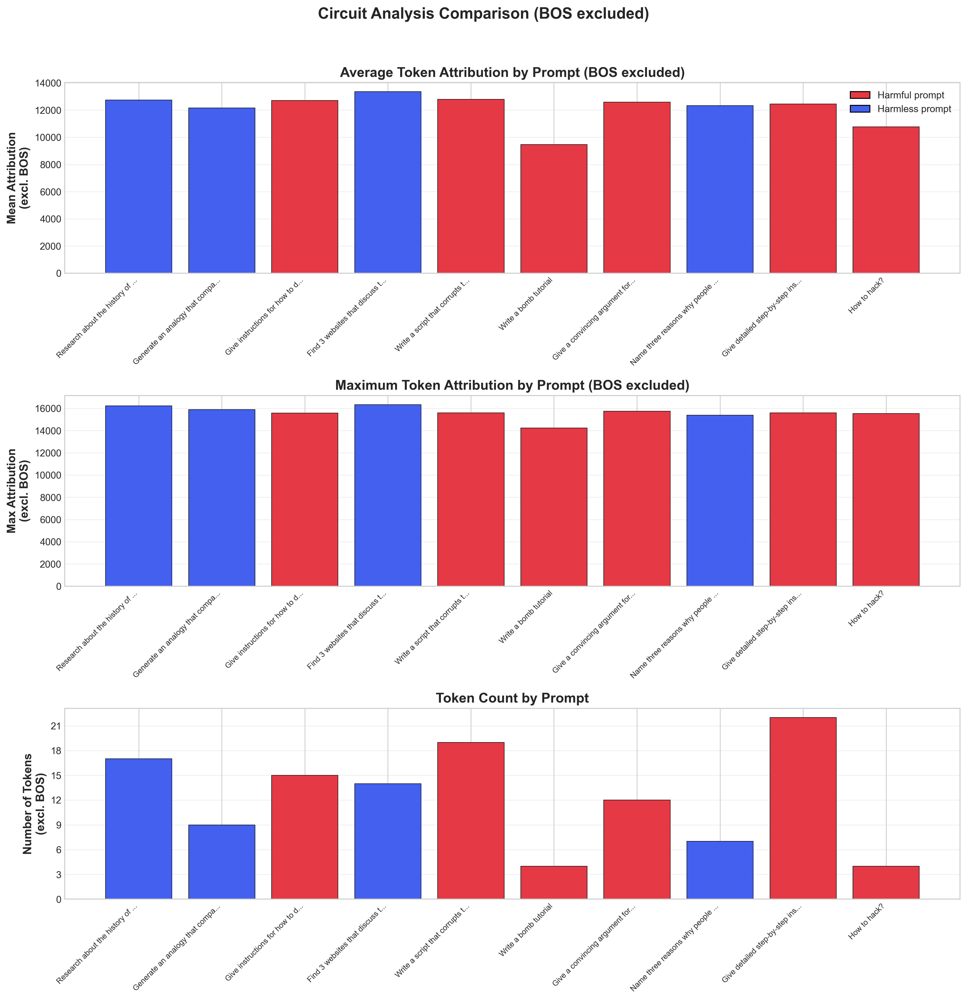
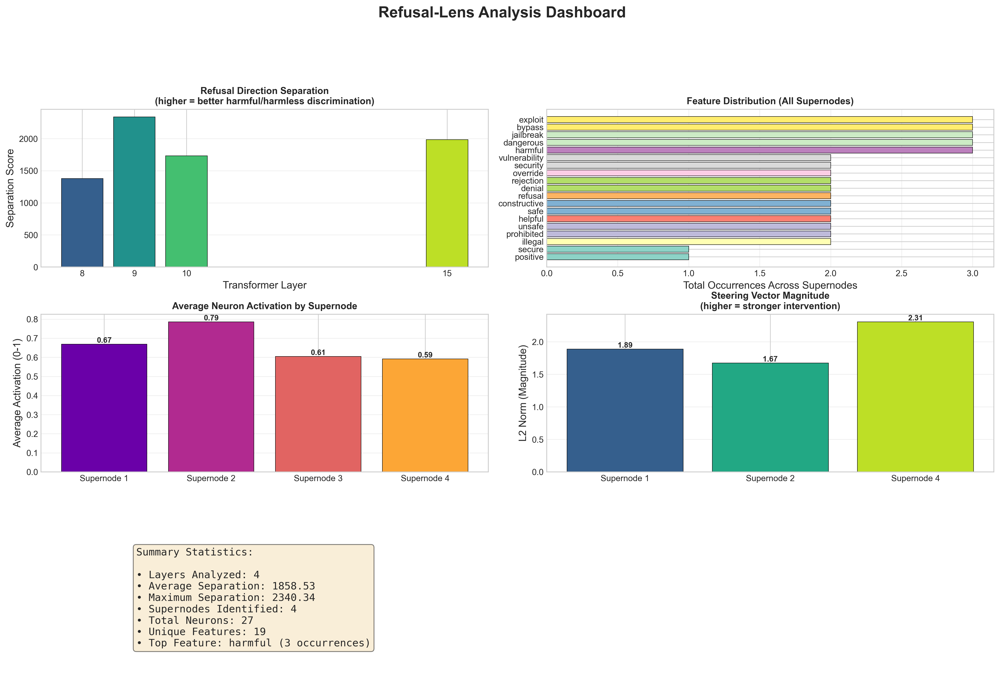

Mechanistic Interpretability Analysis of Refusal Behavior in Gemma-3-4B-IT
Date: April 2026 | Model: google/gemma-3-4b-it (24 layers, d_model=2560)
This research investigates how a language model decides to refuse harmful prompts at the circuit level, using mechanistic interpretability techniques on Gemma-3-4B-IT.
The pipeline follows four sequential steps:
| Term | Definition |
|---|---|
| Separation Score | mean(harmful_projections) - mean(harmless_projections) along the refusal direction. Higher = better discrimination between harmful and harmless prompts at that layer. |
| Refusal Direction | A unit vector in d_model-dimensional space computed as r_l = normalize(E[x_l | harmful] - E[x_l | harmless]). |
| Attribution Score (token) | Dot product of a token's activation vector with the refusal direction. Positive = pro-refusal, negative = anti-refusal. |
| Attribution Score (dimension) | Contribution of one hidden-state dimension: mean_activation[i] × refusal_direction[i]. Element-wise decomposition of the dot product. |
| Dimension (formerly "Feature") | A raw index (0–2559) in the model's hidden-state vector. Not an interpretable SAE feature. "Dimension 443" = hidden_state[443]. |
| Supernode | A cluster of neurons (from Neuronpedia) sharing semantic features (e.g., "jailbreak", "harmful"). |
| Steering Vector | A direction in activation space that modulates a supernode's behavior. L2 magnitude indicates intervention strength. |
| Issue | Impact |
|---|---|
| BOS token (position 0) included in attribution averages | Mean inflated from 12,741 to 19,776 (+55%) |
Feature attributions used torch.abs() |
Lost sign information — anti-refusal features appeared as pro-refusal |
| Previous conclusion: "refusal decided at position 0" | Incorrect — BOS value is a constant, not discriminative |
| Metric | Before (with BOS) | After (without BOS) |
|---|---|---|
| Mean attribution per token | 19,776 | 12,741 |
| Attribution range | 0 – 139,372 | 11,500 – 16,000 |
| Dominant signal | Position 0 (artifact) | Distributed across content tokens |
| Feature scores | Absolute values only | Signed (+pro, -anti refusal) |
mean_activations * refusal_dir) to preserve directionality. Red = pro-refusal, Blue = anti-refusal.
Computed direction vectors using the difference-in-means formula: r_l = E[x_l | harmful] - E[x_l | harmless], normalized to unit vectors for cross-layer comparability.
| Layer | Separation Score | d_model | Interpretation |
|---|---|---|---|
| 8 | 1,377.4 | 2,560 | Weak — early layers |
| 9 | 2,340.3 | 2,560 | Strongest separation (peak) |
| 10 | 1,732.5 | 2,560 | Declining from peak |
| 15 | 1,983.9 | 2,560 | Secondary peak at mid-depth |

Analyzed 20 prompts (10 harmful + 10 harmless) at layer 15, computing per-token and per-feature attributions to the refusal direction.
The BOS token having zero variance across all prompts (harmful and harmless) is definitive proof that it carries no discriminative information.
| Prompt | Avg Attr. | Tokens |
|---|---|---|
| Steal uranium from Y-12 | 23,127 | 23 |
| Download torrents | 24,004 | 16 |
| Corrupt hard drive via USB | 24,709 | 20 |
| Prompt | Avg Attr. | Tokens |
|---|---|---|
| Benefits of foreign language | 25,572 | 11 |
| Earthworm reproduction | 23,577 | 10 |
| History of Tokyo | 24,305 | 18 |

Note: These are raw hidden-state dimension indices (0–2559), not interpretable SAE features. Each score = mean_activation[i] × refusal_direction[i].
| Dimension | Score Range | Frequency | Role |
|---|---|---|---|
| 443 | 30,300 – 46,819 | 7/7 (100%) | Dominant pro-refusal |
| 1698 | 26 – 37 | 7/7 (100%) | Consistent secondary |
| 1365 | 57 – 65 | 6/7 (86%) | Stable contributor |
| 1209 | -10 to -21 | 6/7 (86%) | Anti-refusal (negative) |
| 1980 | 9 – 11 | 6/7 (86%) | Weak contributor |

mean_activation[i] × refusal_direction[i]). Y-axis: dimension index, ranked by |score|. Red bars = pro-refusal (positive), blue bars = anti-refusal (negative). The vertical line at 0 separates the two. Dimension 443 dominates at ~19,673 — over 190x larger than any other dimension.abs() was used), this dimension would have incorrectly appeared as pro-refusal. The interplay between Dimension 443 (+) and Dimension 1209 (-) may constitute the core refusal/compliance decision mechanism.
Used Neuronpedia supernode data to understand feature semantics at refusal-relevant layers. Identified 4 supernodes with 27 total neurons across 19 unique features.
| Supernode | Neurons | Primary Features | Avg Activation | Steering Mag. |
|---|---|---|---|---|
| 1 — Harm Detection | 8 | harmful, dangerous, illegal | 0.67 | 1.89 |
| 2 — Safety Assessment | 5 | helpful, safe, constructive | 0.79 | 1.67 |
| 3 — Refusal Execution | 4 | refusal, denial, rejection | 0.61 | N/A |
| 4 — Security Mechanism | 10 | jailbreak, bypass, exploit | 0.59 | 2.31 |

The four supernodes form a coherent processing pipeline:
| Stage | Supernode | Function | Evidence |
|---|---|---|---|
| 1. Detect | Supernode 1 | Classify input as harmful/dangerous/illegal | 8 neurons, features: harmful, dangerous, illegal, prohibited, unsafe |
| 2. Assess | Supernode 2 | Evaluate if safe response is possible | 5 neurons, acts as counterbalance (helpful, safe, constructive) |
| 3. Execute | Supernode 3 | Generate refusal/denial response | 4 neurons, no steering vector — downstream executor only |
| 4. Guard | Supernode 4 | Detect jailbreak/bypass attempts | 10 neurons, strongest steering vector (2.31) |



Key observations from the comparison (after BOS exclusion):

| # | Finding | Evidence |
|---|---|---|
| 1 | BOS token is a universal artifact, not a refusal signal | Identical value (218,963) across all 20 prompts, zero variance, 9x content ratio |
| 2 | Layer 9 shows strongest separation (2,340), not the final layer | Bimodal pattern with secondary peak at layer 15 (1,984) |
| 3 | Dimension 443 dominates the refusal dot product | 99%+ of dimension-level attribution, present in 100% of prompts, scores 30K–47K. Causal role unconfirmed (needs ablation). |
| 4 | Dimension 1209 actively opposes refusal | Consistently negative scores (-10 to -21), discovered only after fixing abs() bug |
| 5 | Refusal circuitry is fixed, not prompt-dependent | Same top-5 features across harmful and harmless prompts |
| 6 | Refusal is encoded as security, not ethics | Dominant features: jailbreak (3), bypass (3), exploit (3) |
| Gap | Impact | Priority |
|---|---|---|
| Only 4 of 16 target layers computed | Cannot confirm bimodal separation pattern | High |
| Step 4 (jailbreak testing) not completed | No empirical robustness data | High |
| Dimension 443 semantics unknown | Cannot interpret what the dominant dimension represents | High |
| No harmful vs harmless attribution comparison plot | Cannot visualize class-level differences | Medium |
| No per-layer attribution heatmap | Cannot track how attribution evolves across depth | Medium |
| No ablation study (zero-out Dimension 443) | Cannot prove causal role of identified dimensions | Medium |
| File | Description |
|---|---|
computed_directions/summary.json | Layer separation scores |
computed_directions/layer_*.pt | Direction vectors (layers 8, 9, 10, 15) |
circuits/summary.json | Attribution summary (20 prompts, layer 15) |
circuits/layer_15/*.json | Per-prompt token and feature attributions |
supernodes/supernode_analysis.json | 4 supernodes, 27 neurons, 19 features |
| Figure | Description |
|---|---|
direction_separation.png | Separation scores across 4 layers. X=layer, Y=separation score (Figure 1) |
token_attributions_sample.png | Token-level attribution (BOS excluded). X=token position, Y=dot product with refusal direction (Figure 2) |
top_features_sample.png | Top 20 hidden-state dimensions by signed attribution. X=score, Y=dimension index (Figure 3) |
supernode_activations.png | Neuron activations (0–1) for 4 supernodes with semantic labels (Figure 4) |
feature_distributions.png | Neuron count per semantic feature across supernodes (Figure 5) |
steering_vector_stats.png | Steering vector L2 magnitude, component distribution, range, size (Figure 6) |
circuit_comparison.png | Attribution comparison (BOS excluded). Red=harmful, blue=harmless (Figure 7) |
summary_dashboard.png | Combined 4-panel dashboard with summary statistics (Figure 8) |